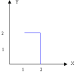
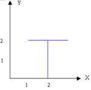
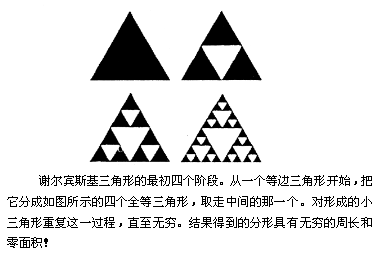
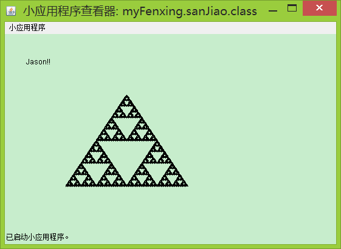

【分形算法】java实现
lawlietfan 发布于 10个月前，共有 0 条评论
0、快速上手java applet小demo
松树.java
import java.applet.Applet;
import java.awt.Graphics;
public class 松树 extends Applet {
public void init() {
}
public void paint(Graphics g) {
g.drawString("静听松声寒!!", 35, 50 );
tree(200.0,400.0,200.0,0.0,8,g);//origin n=8;
}
public void tree(double x1,double y1,double x2,double y2,int n,Graphics g)
{
if(n>=1){
double x3,x4,y3,y4;
//g.drawString("I believe !",0,300);
g.drawLine((int)(x1),(int)(y1),(int)(x2),(int)(y2));
x3=(x1+x2)/2;
y3=(y1+y2)/2;
tree(x1,y1,x3,y3,n-1,g);
tree(x3,y3,x2,y2,n-1,g);
x4=(x2+y2-y3-x3)*0.7071+x3;
y4=(y2-x2+x3-y3)*0.7071+y3;
tree(x3,y3,x4,y4,n-1,g);
x2=(x2*3+x1)/4;
y2=(y2*3+y1)/4;
x3=(x1*3+x2)/4;
y3=(y1*3+y2)/4;
x4=(x2*1.732-y2+2*x3-x3*1.732+y3)/2;
y4=(x2+y2*1.732-x3+2*y3-1.732*y3)/2;
tree(x3,y3,x4,y4,n-1,g);
}
}
}
1、分形算法原理
五星（附源码，由于年代久远故调不通）：http://www.swarmagents.cn/complex/bottomup/lsys.htm
你所看到的所有复杂图形都是用非常简单的规则生成的！究竟是怎么生成的呢？首先，我们来考察一下人们画图的过程。无论什么样的复杂图形，我们都可以把图形看成若干线条构成的，而一个线条是由起点和它的方向决定的，这样，人们复杂的画图动作可以分解为若干线条的连接组合。根据这些，我们来讨论计算机绘图。
首先，计算机绘图也是要确定一个起始点和开始画线的方向这叫做初始状态，当画图进行到任意一个阶段的时候，我们可以用（x,y,a）这三个量来确定任意一个画图的状态，即当前的坐标x,y和当前要画线条的方向角a。然后，我们需要考虑的是状态到状态是如何转换的。我们把状态之间的转换称为动作，不难看出，仅仅用平移和旋转方向就能完成状态之间的转换。接下来，我们用符号定义一些简单的动作（包括评议、旋转和辅助动作）。
F：表示在当前的位置画一条长为l的直线段。l是由用户事先任意设定的数值，表示基本线段的长度。
+：表示逆时针旋转一个角θ，θ的数值由用户事先确定；
-：表示顺时针旋转一个角θ；
[：表示暂时保存当前的画图状态
]：表示提取出保存的画图状态。 “[”和“]”要成对的出现。这样，确定了开始的坐标和方向，由上面符号组成的任意的一系列指令就能指导画图了。比如：FF+F，其中长度l=1,θ=90度角，开始坐标是2，0，开始方向角是90度，那么画出来的图就是：

其中蓝色的线条是画图指令画出的图。开始的时候画图状态为(2,0,90)，也就是说起点在2,0这个点，并且这个时候画图的方向是朝上的，然后开始画指令F，它的意思是方向不变，往前走1个步长并且画线连接上起始的点和下一个将要移动到的点(2,1)，因此画图机器就往正上方画了一条蓝色的长度为1的线段，并且把当前的状态改为了(2,1,90)就是说坐标移动到了2，1这个点，而方向角没变还是垂直向上。接下来画下一个F，仍然是朝上方画一个长度为1的线段。然后是+表示画图状态的方向逆时针旋转90度，然后这个时候的状态变为(2,2,180)，就是说坐标为(2,2)方向朝左方。然后再画一个F，就是往左画一个小线段状态改为(1,2,90)，到此画图命令FF+F执行结束。综合起来，我们能得到下面的表：
指令 状态 画图动作 起始时刻 (2,0,90) 无 F (2,1,90) 向上画一条长为1的线段 F (2,2,90) 向上画一条长为1的线段 + (2,2,180) 逆时针旋转90度，不画图 F (1,2,180) 向左画一条长为1的线段 下面看看比较复杂的画图指令：FF[+F][-F]，起始状态和刚才一样仍然是(2,0,90)，且l为1，转角为90度。
前两个F和上面叙述的执行情况差不多，下面开始讲"["操作，"["操作的含义就是把当前的画图状态先存起来，假设有一个大皮包M可以存放这些状态，那么当执行完操作FF的时候，画图状态是(2,2,90)，下面遇到了"["
命令，那么我们把这个状态存到皮包M中，这样M={(2,2,90)}，表示M中有一个状态为(2,2,90)，"["指令除了存储状态到皮包中其他什么动作也不做，当前的状态仍然是(2,2,90)。接下来执行+命令，逆时针旋转90度，则状态变成(2,2,180)，然后是F则往左画一条线段，状态为(1,2,180)。接下来执行指令"]"，它表示从皮包中取出一个状态作为当前的状态，这样，皮包中有一个状态(2,2,90)，因此当前的状态就变为了(2,2,90)，也就是说我们的铅笔回到了(2,2)点，并且方向朝上，这个时候由于从皮包M中取走了东西，所以皮包就空了。结下的指令为[依然把状态(2,2,90)存到皮包中，然后-则顺时针旋转90度，状态变为(2,2,0)，执行F则往右画一条线段，所以我们最后能够得到下面的图形：
画这个图形的命令执行、当前状态、存储情况如下表：
指令 状态 M中存储的值 画图情况 起始时刻 (2,0,90) 空 无 F (2,1,90) 空 向上画一条长为1的线段 F (2,2,90) 空 向上画一条长为1的线段 [ (2,2,90) (2,2,90) 无 + (2,2,180) (2,2,90) 逆时针旋转90度，不画图 F (2,1,180) (2,2,90) 向左画一条长为1的线段 ] (2,2,90) 空 无 [ (2,2,90) (2,2,90) 无 - (2,2,0) (2,2,90) 无 F (2,3,0) (2,2,90) 向右画一条长为1的线段 ] (2,2,90) 空 无 我们已经知道了由F,+,-,[,]这样的符号可以构成一串画图的指令指导机器画图，也就是说给定一个符号串就能对应的画出这个符号串代表的图形，那么如果用一种办法能够生成这样的符号串序列，那么相当于可以构造出图形来。这种生成指令的办法是什么呢？答案就是产生式系统。
产生式（也叫做规则）是形如X->Y的式子，其中X叫做左件，Y叫做右件。X->Y表示X能够推导出Y。如果X是一个字符串，Y也是字符串，那么X->Y表示能够用Y来替换X。例如如果给定一个初始时刻的字符串ABXXTT，那么运用规则X->Y就能把这个字符串变成ABYYTT。如果产生式的右件多于一个字符，那么就能推导出比原来字符串更长的字符串来。例如如果X->YYY，那么ABXXTT会被替换成ABYYYTT，显然后来的字符串比原来的长。我们已经看到了从简单的字符串生成复杂字符串的可行性了。
接下来，要说明的是产生式可以进行嵌套的表示，比如说X->XY就是一种嵌套的形式。因为当你用右件XY代替前件X的时候产生的新字符又会产生X，而X又可以运用规则X->XY，这样可以无限次的迭代下去。
好了，有了产生式就不难理解产生式系统了，它就是由若干个产生式构成的一组语句。并且各个产生式之间可以相互替换字符串。比如如下的产生式系统：X->YF, Y->+FX，开始时刻的字符串是X，用这两个规则跌代1次就能得到字符串：+FXF，迭代2次就是+F+FXFF，3次是+F+F+FXFFF，……。（这里跌代一次表示的是用产生式系统中的所有产生式规则都来替换当前的字符串）。我们已经看到，最后的式子就是形如我们上面列举的指令例子，如果把最后的X忽略掉，这个指令串就能指导机器画图了！这就是L系统的工作原理！下面我们以画出下面的枝条为例，再看看L系统是如何运行的。
已知这个图形的产生式系统是：F->F[+F]F[-F]F，开始的时候字符串是F。转角为-25.7341度。这样，我们跌代6次就可以得到最终的画图指令（太长，此处略去），再把这个指令字符串对应的指导机器画出图形，就能得到上面的图。你可以点击程序中单步运行的按钮，看看系统跌代不同的次数能够产生什么样的图形。
2、代码分析
在松树.java 中代码大致流程如下：
先确定点a1,a2,连接之；
第一步取a3为前两者中点，a4为左上角某点，连接之；
第二步取a3为直线a1a2的0.75左右处，算出a4为右上角，算a4之公式没看懂，囧，；
之后重复此过程；{！2.2中是将左枝的公式用在右枝上}
2.1、简单例子：画歇尔宾斯三角

import java.applet.Applet;
import java.awt.Graphics;
//http://stchou.iteye.com/blog/948469
//三角
public class sanJiao extends Applet {
public void init() {
}
public void paint(Graphics g) {
g.drawString("Jason!!", 35, 50 );
double[] a=new double[9];
double[] b=new double[9];
double[] c=new double[9];
a[0]=200.0;a[1]=100.0;
b[0]=100.0;b[1]=250.0;
c[0]=300.0;c[1]=250.0;
//定义迭代次数
int n=8;
sanjiao(a,b,c,n,g);
}
//定点顺序，上左右
public void sanjiao(double[] a,double[] b,double[] c,int n,Graphics g){
if(n>=1){
double[] x=new double[9];
double[] y=new double[9];
double[] z=new double[9];
g.drawLine((int)(a[0]),(int)(a[1]),(int)(b[0]),(int)(b[1]));
g.drawLine((int)(a[0]),(int)(a[1]),(int)(c[0]),(int)(c[1]));
g.drawLine((int)(b[0]),(int)(b[1]),(int)(c[0]),(int)(c[1]));
x[0]=(a[0]+b[0])/2;
x[1]=(a[1]+b[1])/2;
y[0]=(b[0]+c[0])/2;
y[1]=(b[1]+c[1])/2;
z[0]=(c[0]+a[0])/2;
z[1]=(c[1]+a[1])/2;
//sanjiao(x,y,z,n-1,g);
sanjiao(a,x,z,n-1,g);
sanjiao(x,b,y,n-1,g);
sanjiao(z,y,c,n-1,g);
}
}
}
运行结果：

2.2、简化版的松树.java
public void tree(double x1,double y1,double x2,double y2,int n,Graphics g)
{
if(n>=1){
double x3,x4,y3,y4;
//g.drawString("I believe !",0,300);
g.drawLine((int)(x1),(int)(y1),(int)(x2),(int)(y2));
x3=(x1+x2)/2;
y3=(y1+y2)/2;
tree(x1,y1,x3,y3,n-1,g);
tree(x3,y3,x2,y2,n-1,g);
x4=(x2+y2-y3-x3)*0.7071+x3;
y4=(y2-x2+x3-y3)*0.7071+y3;
tree(x3,y3,x4,y4,n-1,g);
x4=-(x2+y2-y3-x3)*0.7071+x3;
y4=-(y2-x2+x3-y3)*0.7071+y3;
//
tree(x3,y3,x4,y4,n-1,g);
}
}
3、补充资料
三星：http://stchou.iteye.com/blog/948469
五星（可惜无源码）：http://blog.163.com/zhangmwen@126/blog/static/113437502200923095642618/